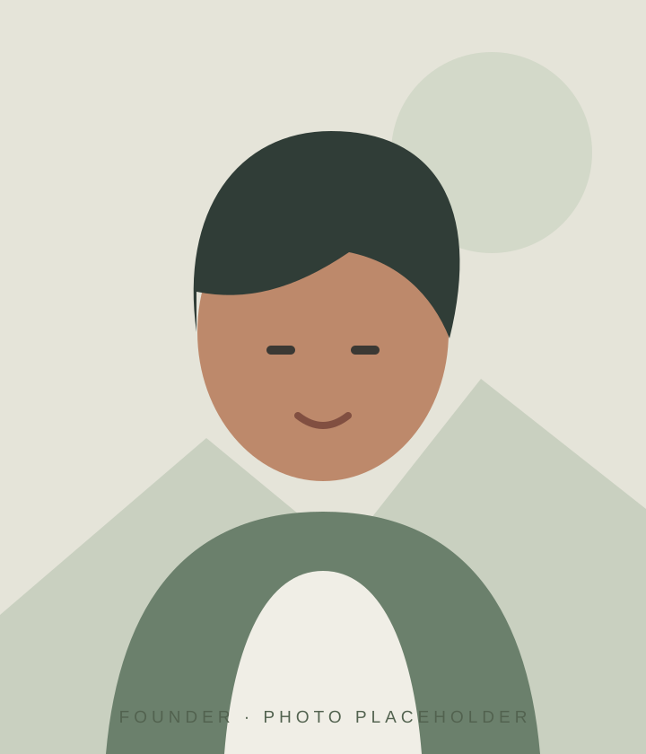
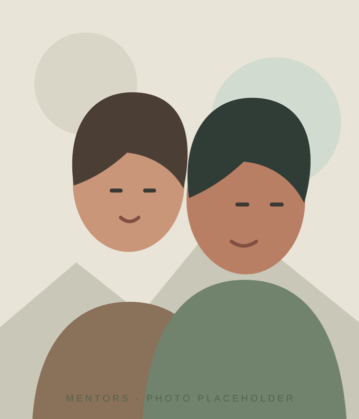
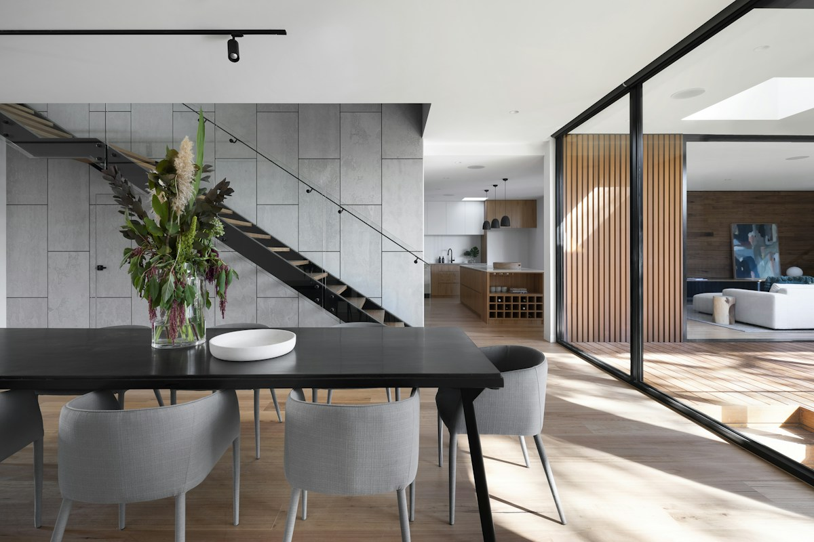

FOUNDER 01
Founder 01
Co-founder · Design & Vision
Shapes the creative direction, developing thoughtful concepts into distinctive spaces shaped around each client.
LIFE IN EVERY LINE / BY HOUSE OF DESIGN
A design-led venture built on thoughtful ideas, practical knowledge and a shared care for the spaces we call home.
Our founding team brings a fresh perspective to how homes are imagined and built.
Experienced mentors from House of Design work alongside the team, sharing their construction and Vaasthu knowledge. Their guidance connects new ideas with the practical understanding that brings a project to life.
Life in every line and House of Design have distinct identities. Work delivered by House of Design will always be credited to House of Design.
THE PEOPLE BEHIND THE WORK
Meet the team bringing thoughtful design together with practical knowledge.
LIFE IN EVERY LINE

FOUNDER 01
Co-founder · Design & Vision
Shapes the creative direction, developing thoughtful concepts into distinctive spaces shaped around each client.
FOUNDER 02
Co-founder · Architecture & Planning
Turns ideas into clear spatial plans, balancing flow, function and the details that make a home feel personal.
FOUNDER 03
Co-founder · Projects & Delivery
Coordinates the journey from design intent to on-site progress, keeping decisions practical and the process considered.
FOUNDER 04
Co-founder · Client Experience
Builds lasting client relationships through attentive communication, thoughtful collaboration and care at every step.
HOUSE OF DESIGN

MENTOR 01
Construction & Execution Mentor
Shares hands-on construction knowledge and execution experience to help turn design ideas into buildable, well-resolved spaces.
MENTOR 02
Vaasthu & Design Mentor
Offers Vaasthu and design guidance, helping the team consider orientation, planning and the way each space supports everyday life.
Names, role titles, descriptions and portrait illustrations are placeholders. Replace them with confirmed team details and photos.

Design inspiration · Sample photography from Unsplash.
We listen closely, make room for your ideas, and bring clarity to each step. Because the best spaces are shaped around the people who use them.
MEET US THROUGH A CONVERSATION